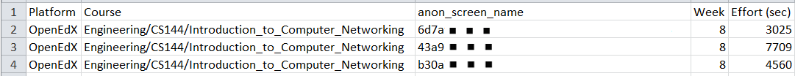
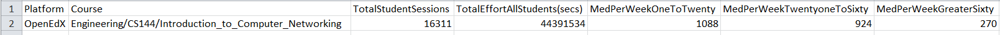

How to Access the VPOL Online Learning Data
The Vice Provost Office for Online Learning facilitates the teaching
of online classes. The instruction delivery platforms are instrumented
to collect a variety of data around participants' interaction with the
study material. Examples are participants manipulating video players as
they view portions of a class, solution submissions to problem sets,
uses of the online forum available for some classes, peer grading
activities, and some demographic data. The type of data that is
collected depends on the delivery platform used for a particular
class.
VPOL makes some of this data available for research on learning
processes, and for explorations into improving instruction.
All data that VPOL shares is available on machine
datastage.stanford.edu. You have multiple methods of using this data:
We provide self service answers to frequent questions, customizable to
your context. Data viewing programs for MAC and Windows allow you to
browse through our content. Going further, most analysis tools, like
R, SPSS, and Excel can connect directly to our databases. Similarly,
visualization tools are available that allow you to create static, or
interactive charts of data directly from our sources. We explain these
access methods here, or point to relevant instructions on the Web.
Additionally, we run
a Tableau Server
to which you can publish visualizations you create with the Tableau
Desktop visualization tool. Visitors can manipulate these
visualizations to the degree you provide for. A comment area is
available for each view to discuss the information. If desired, access
to the views can be limited. Again, more in this document.
We now run through the available access paths to the data, ordered in
increasing power (and sometimes associated complexity).
Protocols for Access
Even though we do not keep highly sensitive information on this
server, we do need to protect the data from malicious intrusion. If
you are interested in studying the data, please fill out
our request form.
While the form accommodates requests for data with personally
identifiable information, we can only provide such access in special
cases. The data from which personalized information has been removed
is quite rich. Please at least try to work with that data until you
have a firm research plan in mind.
If you are the instructor of a class, and you need the data to improve
future runs of your course, the personally identifiable data is more
freely available than if the data is used for research.
Please take the online non-medical human subjects research certification
class
(
through Stanford
or through CITI, or some
other
institution). Then email
your resulting PDF file.
If you publish a paper, we appreciate credit for the data, and a note
telling us about how you used the material. Both of these steps help
us justify the cost of data collection, and we are plain interested in
what you find!
Summary of Available Data
Datastage holds learning research data derived from courses offered on
three platforms: NovoEd, Coursera, and OpenEdX. Documentation on
Coursera export formats are
described
in a separate document. For NovoEd format documentation you need
to browse their tables. Here is a summary of data that is available
for Stanford courses taught on OpenEdX. For more in-depth information
see Explanation of OpenEdX data fields.
Data include both raw numbers that the OpenEdX platform collects, and
tables that result from computations over that base data.
Note: tracking log data that the platform collects is
known to be incomplete. Tracking logs list small actions that
participants undertake when interacting with a course through their
browser. Examples are video playback controls, and assignment
submissions. The platform instrumentation misses an unknown number of
these events. The EdX consortium is working on this issue. Meanwhile,
consider data based on tracking logs a conservative
estimate. Reportedly, Coursera tracking logs experience similar
missing data.
Stored tables and Associated Views
- CourseInfo: Facts about courses, such as start/end dates,
academic year and quarter in which a course was offered.
- ActivityGrade: Assignment grades; includes right/wrong for each
problem part, the learners' solution choice for each answer pard,
and the first and last solution submission times. Constructed from platform table
courseware_studentmodule.
- Performance: Daily cumulative assignment performance per
learner. This is the average grade over all assignments up to the
day before the query. A view onto ActivityGrade.
- FinalGrade: 'Raw' final grades. Raw in that they do not
take into account instructor defined weightings. This is an
anonymized view onto the private table UserGrade (see
below). FinalGrade differs from the Performance table in that it
reflects the platform's current grade. That grade might reflect
work other than the assignments that are captured in the
ActivityGrade table.
- UserGrade: Raw grades as recorded by the platform. An
amalgam of the platform tables auth_user and
certificates_generatedcertificate.
- ABExperiment: Data resulting from the use of the OpenEdX AB
testing facilities.
- OpenAssessment: Data resulting from the use of the OpenEdX
peer grading facilities.
- UserCountry: country of origin by IP address. Each row is a tuple
consisting of one anonymous user id, the two-letter country code,
the three-letter country code, and the spelled-out country. If a
participant accesses the platform from different IP addresses,
each IP address has its own row in the table. Multiple accesses
from the same IP generate just one row.
- EdxForum.contents: Forum entries since about June
2013. The entries are in relational form. Two versions can be
generated: anonymized with hashed user ids
different from the hashes used in other tables, and anonymized
using the same hashes.
- VideoInteraction: an excerpt from tracking logs, focusing on
participants' interactions with video.
- EventXtract: A much slimmed view of the OpenEdX tracking log
events. The view only includes fields that are currently in use by
the platform.
- LoadInfo: Information about archive updates.
- EdxPrivate.EventIp:IP addresses for each event. This table
is only available by special arrangement.
State, InputState, Answer, and CorrectMap are subsumed by the
tables above. If you are familiar with the OpenEdX tracking log
event format, you will recognize the names, and can use them
individually.
Computed tables
- Time-on-task: estimate for how long participants worked online on
their courses. Computed from tracking log events, and partitioned
into 30 minute sessions. Available: every session for every participant
and course, weekly aggregates of the sessions, and course level
aggregates. Session length for the computations can be customized
on request, but this is a manual process. Part of the canned table
exports, because this table is computed on demand, not stored (see
next section)
Canned exports
- The tracking log data, video interactions, activity grade, forum
posts, and time-on-task tables can be exported per course, and picked up over
the Web.
- Other interactions with the tables require access to our server,
and knowledge of SQL.
Mirrored OpenEdX Platform Tables
A number of tables are mirrored from the
Stanford OpenEdX platform with delay. This collection can be extended.
Available Databases
List of available courses
The archive includes data from the following Stanford courses:
In addition the archive
includes MOOCDb versions for many of the above courses.
MOOCDb is a relational
format that aims to combine schemas from
multiple online learning platforms.
Resources beyond this document
Data from Stanford courses offered via the OpenEdX platform software
by Stanford includes the above mentioned events, which document
how participants interacted with the platform. Forum posts are
available as well. All data has personally identifiable information
removed.
For schema details of each OpenEdX table, see
below. Meanings of OpenEdX data fields are also explained at
the OpenEdX Consortium
Tracking Log documentation
Forum data is explained in the
OpenEdX Consortium documentation.
Coursera export
format information is a useful resource for understanding formats
in the Coursera archives.
Explanation of OpenEdX data fields
The Edx and EdxPrivate databases provide a lossless translation from
the OpenEdX platform tracking logs to relational tables. The
translation was constructed based on tracking logs of Stanford's
OpenEdX classes.
Each entry in a tracking log contains information about one small
interaction that one participant undertook with the learning
platform. Examples are the submission of a problem solution, a video
control action, like starting a video, or the initial creation of an
account. Note:the event collection process of the OpenEdX
platform is not perfect yet. Events do get lost on the way. The EdX
consortium is working on this issue. But meanwhile you need to
consider computations based on track logs as lower bounds.
Beware 9c1185a5c5e9fc54612808977ee8f548b2258d31: One event
track failure is that some screen names show up as empty strings. When
we anonymize these empty screen names, they all come to look like the
same anonymized person, the above ugly string. When we export tables
for you, we filter these duds out. But if you work on the database
tables themselves, you need to take of it yourself.
The logs were designed to hold every piece of information that might
need to be captured now or in the future. Not all of the log fields
are currently in use. Of the many columns in the relational tables
only some therefore need to be considered at this point. We therefore
created some tables that allow you to focus.
- EventXtract
- VideoInteraction and
- ActivityGrade
We call these the basic tables. During export we partition the
tables into groups that correspond to the analysis purposes for which
they are intended. The Basic Tables are meant for everyday
use. Those tables exist in the database on Datastage, and we can
export extracts of the three tables for individual classes as well.
Export table group Engagement are tables that approximate how
much time course participants spent interacting with a course on their
computer. These tables are only available as per-course exports. They
do not exist in the database, but are computed when we export. We
will add more table groups as we go along.
Other tables of interests are Demographics, which provides
basic, anonymized info about each participant, and EdxForum the
Forum posts, upvotes, downvotes for all courses.
We describe the tables now,
group by group.
Basic Export Tables
The first of the basic export tables is the main table, which contains
all the events: EventXtract. NOTE: the event_type field
is the key to interpreting the remaining columns. Please see the
OpenEdX
Tracking Log documentation of the original JSON formatted
fields. Those descriptions are authoritative.
| EventXtract |
| anon_screen_name |
Anonymized participant identifier |
| event_type |
Type of action the participant took
See OpenEdX
Tracking Log documentation
|
| ip_country |
Participant's country of origin based on IP
address from which the action was performed. The field uses the
standard three-letter country code (http://countrycode.org/). If
country of origin is of special interest, consider table
UserCountry, which contains every participant's action country
of origin in two and three letter code, plus full name. IP addresses
themselves are considered personally identifiable information, but are
available by special request in the private table EdxPrivate.EventIp.
|
| time |
Date and time when action was taken |
| course_display_name |
Name of course for which action was taken |
| resource_display_name |
Name of video, assignment, or teaching module
associated with the action. This information is only as good
as what instructors provided when constructing their course. |
| success |
Whether the participant succeeded, or not (context dependent) |
| video_code |
Machine name of video, (video actions only)
For YouTube videos this column allows you
to find the video itself. For example,
if this column contains '6Tnr8OL-9So'
you can google that code, and will find
the video.
|
| video_current_time |
Video player's current playhead time |
| video_speed |
Video player's current speed |
| video_old_time |
For video_seek action: original playhead time |
| video_new_time |
For video_seek action: new playhead time |
| video_seek_type |
Control used for a video seek action |
| video_new_speed |
For video speed change action: new speed |
| video_old_speed |
For video speed change action: original speed |
| goto_from |
Teaching sequence change: origin |
| goto_dest |
Teaching sequence change: destination |
Here are a couple of example rows, with most of the video related
columns skipped. Those are more easily accessed using the
VideoInteraction table (see below):
EventXtract Example Rows:
+------------------------------------------+---------------+----------------+---------------------+---------------------------------------------+-----------------------+---------+------------+-|
| anon_screen_name | event_type | ip_country | time | course_display_name | resource_display_name | success | video_code |... more video cols... | goto_from | goto_dest |
+------------------------------------------+---------------+----------------+---------------------+---------------------------------------------+-----------------------+---------+------------+--
| 3fc... | book | USA | 2013-11-10 06:43:10 | Engineering/EE264/DSP | | | | | | |
| 6e9... | problem_check | BEL | 2013-11-10 06:43:10 | Engineering/Solar/2013| I-V curve | | | | | |
+------------------------------------------+---------------+----------------+---------------------+---------------------------------------------+-----------------------+---------+------------+--
If your focus is video behavior analysis, then the VideoInteraction
table is the easiest to use. It just extracts the video events from
the EventXtract table; the video related information is the same in
both tables.
Note that participants can download videos, and subsequently use their
own, local player. The platform software will not 'see' such local
activities, so this table can underestimate video activity frequency.
| VideoInteraction |
| event_type |
Type of video action the participant took |
| resource_display_name |
Name of video |
| video_current_time |
Video player's current playhead time |
| video_speed |
Video player's current speed |
| video_new_speed |
For video speed change: new speed |
| video_old_speed |
For video speed change: old speed |
| video_new_time |
For video seek: new playhead time |
| video_old_time |
For video seek: old playhead time |
| video_seek_type |
Video control used for seek |
| video_code |
Machine code name for video.
For YouTube videos this column allows you
to find the video itself. For example,
if this column contains '6Tnr8OL-9So'
you can google that code, and will find
the video.
|
| time |
Time the video action was taken |
| course |
For video speed change action: new speed |
| course_display_name |
Name of course for which action was taken |
| anon_screen_name |
Teaching sequence change: destination |
| video_id |
a unique OpenEdX id for this video |
Here again some example rows:
VideoInteraction Example Rows:
+------------------------------------------+---------------+----------------+---------------------+---------------------------------------------+----------------
| event_type | resource_display_name | video_current_time |video_speed | video_new_speed | video_old_speed | video_new_time | video_old_time | video_seek_type ...
-----------------------------------------------------------------------------------------------------------------------------------------------------------------
| play_video | Video 7.3.2: Hydrogen | 1244.047 | None | | | | |
| pause_video | Video 7.3.2: Hydrogen | 1217.389976 | None | | | | | ...
| play_video | Video 7.2.2: Oxygen | 101.046621 | None | | | | |
+-------------+------------------------------------------------+--------------------+-------------+-----------------+-----------------+----------------+---------
-------+---------+------------+----------------------------------------------|
... | video_code | time | course_display_name | anon_screen_name |
-----------------------------------------------------------------------------|
| ZO0_R5VAoG4 | 2013-11-10 06:43:12 | Eng/EE-222/ME_I | ef04... |
... | ZO0_R5VAoG4 | 2013-11-10 06:43:42 | Eng/EE-222/ME_I | 84fa... |
| 6Tnr8OL-9So | 2013-11-10 06:43:43 | Eng/EE-222/ME_I | 8998... |
-------+-----------------+-------------+---------------------+----------------
The ActivityGrade table holds events that concern homework
assignments. Each row in the table is one solution submission, or
inspection of one assignment by one participant. The rows inform whether
the solution was correct, in some parts, or in its entirety. If only
parts were correct, the table shows which parts, and which incorrect
answers the participant provided.
Note:the ActivityGrade table is not constructed from EdX track
event logs. Instead, this table is composited from information in
the platform table courseware_studentmodule. In particular the
infamous JSON encoded state field in that table is parsed and
its JSON values are made accessible as columns in ActivityGrade.
| ActivityGrade |
| activity_grade_id |
A unique identifier for this row |
| student_id |
A numeric identifier used for participants in various other platform tables. |
| course_display_name |
Name of course for which assignment was created |
| grade |
The grade the participant received for this
assignment.
 This
quantity originates from a JOIN between
auth_user and certificates_generatedcertificate. This
quantity originates from a JOIN between
auth_user and certificates_generatedcertificate.
|
| max_grade |
The maximum grade possible for this assignment |
| percent_grade |
Percentage of grade from max_grade |
| parts_correctness |
Series of plus and minus chars indicating which problem parts were answered correctly |
| answers |
Answers the participant provided for the assignment. |
| num_attempts |
Total number of participant's attempts at this
assignment at the time the event is
received.
Note: each attempt generates an event,
only the last attempt has the correct number.
The number -1 stands for 'not applicable.'
|
| first_submit |
This date is currently unreliable. |
| last_submit |
This date is currently unreliable. |
| module_type |
The teaching module type |
| anon_screen_name |
Participant's anonymized name |
| resource_display_name |
Assignment name. This information is only as
good as what instructors entered when they created the
assignment. The module_id (next field) is a unique, automatically
assigned name for the assignment. |
| module_id |
Internal platform ID of the row's module. |
ActivityGrade Example Rows:
+------------------------------------------+---------------+----------------+---------------------+---------------------------------------------+-----------------------+---------+------------+------|
| course_display_name | grade | max_grade | percent_grade | parts_correctness | answers | numAttempts | first_submit | last_submit | module_type | resource_display_name | anon_screen_name |
------------------------------------------------------------------------------------------------------------------------------------------------------------------------------------------------------|
|Medicine/101/Stats | 2 | 2 | 100 | ++ | choice_1,choice_2 | 2 | 2013-05-13 12:42:40 | 2013-05-13 12:50:52 | problem | Quiz | 55e90... |
|Medicine/101/Stats | 0 | 2 | 0 | -- | choice_0,choice_4 | 1 | 2013-05-13 13:23:57 | 2013-05-13 13:32:33 | problem | Quiz | 95d8b... |
+-------------+------------------------------------------------+--------------------+-------------+-----------------+-----------------+----------------+----------------+-----------------+------------
The Demographics view contains anonymized demographic data
on participants. A major consideration when using this table that
participants provide this information voluntarily. Some do, others
don't; some lie, others tell the truth.
| Demographics |
| anon_screen_name |
Participant's anonymized name |
| gender |
Single letter: 'm' or 'f'. Blank if not provided. |
| year_of_birth |
Year of participant's birth, if
provided. Else NULL |
| curr_age |
Current age, computed on the fly from the year
when the row producing SELECT is issued, and year_of_birth. |
| level_of_education |
One of: Doctorate, Masters or professional
degree, Bachelors, Associates, Secondary/High
School, Junior secondary/junior high/middle
School, Elementary/Primary School, None,
Other, User withheld, Signup before level
collected. |
| country_three_letters |
Official three-letter code of country. If
participant interacted with a course from
multiple Internet addresses, Demographics
will contain one entry for each distinct
address, even if the countries are the same. |
| country_name |
Full name of country. See
country_three_letters for explanation of
multiple entries.
|
If participant interacted with a course from multiple Internet
addresses, Demographics will contain one entry for each distinct
address, even if the address' countries are the same. It is therefore
wise to use DISTINCT when querying:
mysql> SELECT DISTINCT Demographics.*, FinalGrade.grade
FROM Demographics, FinalGrade
WHERE Demographics.anon_screen_name = FinalGrade.anon_screen_name
AND FinalGrade.course_id = 'Engineering/Solar/Fall2013'
LIMIT 4;
+------------------------------------------+--------+---------------+----------+--------------------+-----------------------+---------------+-------+
| anon_screen_name | gender | year_of_birth | curr_age | level_of_education | country_three_letters | country_name | grade |
+------------------------------------------+--------+---------------+----------+--------------------+-----------------------+---------------+-------+
| 18070a6cbf7c75ea6b6a53cf08d875e50a4dc1fb | m | 1989 | 25 | User withheld | BGR | Bulgaria | 0 |
| f42a592a30690dc43bdd3d0ece1019c79b88c8ac | m | 1987 | 27 | Bachelors | USA | United States | 0 |
| 20bd8681086b0ddb994e1fec2d0de110f55bc1da | m | 1990 | 24 | Bachelors | USA | United States | 0 |
| 610467062fa05ff271198cfcc689febe856f48e7 | | NULL | NULL | User withheld | FRA | France | 0 |
+------------------------------------------+--------+---------------+----------+--------------------+-----------------------+---------------+-------+
All Forum post entries are scrubbed of personally identifiable
information. The following are redacted: phone numbers, zip codes,
email addresses, and the poster's name. In each case the type of
redacted information can be determined by the redaction text. For
example, you will see <emailRedac>, or <zipRedac>. For
poster names you will see
<nameRedac_anon_screen_name_redacted>. These replacements keep
word count intact. Unfortunately, international zip codes are varied
enough that detecting them results in many false positives. Some
non-zip numeric information is therefore redacted for no good
reason. Conversely you may find some text that does identify someone
in the course directly or indirectly. We do the best we can at the
scale of information. Human inspection of a 30,000 post samples
revealed a scrubbing success rate of 98.4%. Please be respectful if
you do find one of the rare cases where identification is
possible. Keep the information to yourself,
and report it to us so
that we can fix the problem.
Here is a complication stemming from privacy protection: you will find
the anon_screen_name column filled with the single value
'anon_screen_name_redacted'. You can therefore not use this column to
select by participant as you do on all the other tables. Instead, when
selecting from the EdxForum.contents table, you need to use
column forum_uid.
This approach works fine while working within the Forum table
only. But the setup prevents you from relating Forum posts to other
tables to find correlations between Forum postings and, say, grade
outcomes.
The reason for this separation is a known attack onto the privacy in
the non-Forum tables when the same participant code is used in both
worlds. We call the fully redacted Forum table non-relatable.
To explore correlations you need a translation from
the forum_uid in the Forum table to the anon_screen_name
used in all other tables. To receive that translation,
please fill out the
application form that you filled out before to gain access to the
data. This time, please make very clear in the free-form text field
that you already have access to the data, and that you just need the
additional Forum translation information.
Forum posts contain a number of identifiers. Here is an explanation of
relationships between these identifies. This explanation is based on
observation, not on documentation from the original software; the
information may therefore be incorrect or incomplete:
- forum_post_id: identifies the post in a given row. This is
usually a question, but could be a comment.
- comment_thread_id: matches the original
forum_post_id that started the thread in which
the current post is a comment or reply.
- parent_id: identifies the immediate predecessor of the
row's post in the thread of which the post is a part.
- parent_ids: provides a full chain from the
thread-originating post to the current comment/reply.
Each Forum post is contained in one row:
| OpenEdX Forum Table |
| forum_post_id |
unique id for this
post; used in other columns of other posts to refer to
this row. This ID is assigned by the OpenEdX
Forum software.
|
| anon_screen_name |
anonymized participant ID (redacted unless table is relatable) |
| type |
type of post: currently Comment or CommentThread |
| anonymous |
whether post was submitted anonymously |
| anonymous_to_peers |
anonymous to peers |
| at_position_list |
apparently unused |
| forum_uid |
anonymized poster ID;
different from anon_screen_name. Need
permission to convert from forum_uid
to anon_screen_name. Use functions idForum2Anon()/idAnon2Forum() for conversion
between them.
|
| body |
anonymized body of the post. Redacted: emails, phone numbers, zip codes, name of poster |
| course_display_name |
name of course with which the entry is associated |
| created_at |
date of creation |
| votes |
original JSON that summarizes votes. It is recommended to instead use the broken out columns below |
| count |
total number of votes: up or down |
| down_count |
number of down votes |
| up_count |
number of up votes |
| up |
list of individual up votes |
| down |
list of individual down votes |
| comment_thread_id |
ID of thread. Refers
to forum_post_id of ur-post. |
| parent_id |
ID of parent post (see above). |
| parent_ids |
chain of post IDs in
thread (see above). |
| sk |
Used by Forum software
for caching |
| confusion |
reserved for sentiment
analysis results. |
| happiness |
reserved for sentiment
analysis results. |
EdxForum Example Rows:
+--------------------------+-----------------------------+---------------+-----------+--------------------+------------------+----------------------------------+
| forum_post_id | anon_screen_name | type | anonymous | anonymous_to_peers | at_position_list | forum_uid | ...
+--------------------------+-----------------------------+---------------+-----------+--------------------+------------------+----------------------------------+
| 519461545924670200000001 | <anon_screen_name_redacted> | CommentThread | False | False | [] | AD0EB4DEEB4DC139D8FDA01000EDAE3E |
| 519461545924670200000005 | <anon_screen_name_redacted> | Comment | False | False | [] | 5F43341D3FDA2BBE001D8DBBB84BB3E5 | ...
| 519461555924670200000006 | <anon_screen_name_redacted> | Comment | False | False | [] | 5CA0BD47154EB68991F10C7F464F3BF3 |
+--------------------------+-----------------------------+---------------+-----------+--------------------+------------------+----------------------------------+
+--------------------------------------------------------------------
... | body | course_display_name | created_at | ...
+--------------------------------------------------------------------
| This is a post. | Engineering/CS144/Spring | 2013-05-16 04:32:20 |
... | Another post | MITx/6.002x/2012_Fall | 2013-05-16 04:32:20 | ...
| Third post | MITx/6.002x/2012_Fall | 2013-05-16 04:32:21 |
+--------------------------------------------------------------------
+----------------------------------------------------------------------------------------------------------------------------------
... | votes | ...
+----------------------------------------------------------------------------------------------------------------------------------
| {'count': 10, 'point': -6, 'down_count': 8, 'up': ['2', '10'], 'down': ['1', '3', '4', '5', '6', '7', '8', '9'], 'up_count': 2} |
... | {'count': 10, 'point': 4, 'down_count': 3, 'up': ['1', '2', '5', '6', '7', '8', '9'], 'down': ['3', '4', '10'], 'up_count': 7} | ...
| {'count': 10, 'point': -4, 'down_count': 7, 'up': ['6', '8', '10'], 'down': ['1', '2', '3', '4', '5', '7', '9'], 'up_count': 3} |
+----------------------------------------------------------------------------------------------------------------------------------
+--------------------------------------------------------------------------------+-----------------------+---------------------+-------------
... | count | down_count | up_count | up | down | comment_thread_id | ...
+--------------------------------------------------------------------------------------------------------------------------------------------
| 10 | 8 | 2 | ['2', '10'] | ['1', '3', '4', '5', '6', '7', '8', '9'] | None |
... | 10 | 3 | 7 | ['1', '2', '5', '6', '7', '8', '9'] | ['3', '4', '10'] | 519461545924670200000001 | ...
| 10 | 7 | 3 | ['6', '8', '10'] | ['1', '2', '3', '4', '5', '7', '9'] | 519461545924670200000001 |
+--------------------------------------------------------------------------------------------------------------------------------------------
+----------------------------------------------------------------------------
... | parent_id | parent_ids | sk | confusion | happiness |
+----------------------------------------------------------------------------
| None | None | None | | |
... | None | [] | 519461545924670200000005 | | |
| None | [] | 519461555924670200000006 | | |
+----------------------------------------------------------------------------
The CourseInfo table is constructed from the
OpenEdX modulestore MongoDB structure.
| CourseInfo |
| course_display_name |
Course name as used in other tables of the archive. |
| course_catalog_name |
The course name as shown in the course catalog. |
| academic_year |
The academic year in which this row's
course ran. For example, a course that ran in the Fall quarter
of 2013 will have 2013 in this field. If the course instead
ran in, say, the Spring quarter of that same academic year
(2013/2014), this field will again contain 2013, even though
the course would have run in the calendar year 2014. |
| quarter |
The academic quarter in which the course was
offered. This value will be one of 'fall,', 'winter,',
'spring,' or 'summer.' |
| num_quarters |
Duration of the course in academic
quarters. This number is computed from the start and end
dates in the OpenEdX platform table modulestore. When
that source does not provide an instruction end date, then
this field is set to -1, because the correct entry cannot be
computed. |
| is_internal |
A 1 if the course was public. A 0 if the
course was either for Stanford students only, or was offered
for a fee. |
| enrollment_start |
Date at which the platform opened this course
for enrollment. |
| start_date |
Date when instruction began. |
| end_date |
Date when instruction ended. |
Example rows:
+----------------------------------------------------------------------------------------------------------------------------------------------------------------------------------------------------------|
| course_display_name | course_catalog_name | academic_year | quarter | num_quarters | is_internal | enrollment_start | start_date | end_date |
| HumanitiesSciences/Physics101E/Spring2014 | The Special Theory of Relativity | 2012 | summer | -1 | 0 | 0000-00-00 00:00:00 | 2013-08-18 00:00:00 | 0000-00-00 00:00:00 |
| Medicine/HRP258/Statistics_in_Medicine | Statistics in Medicine | 2012 | summer | 1 | 0 | 2013-05-10 00:00:00 | 2013-06-11 00:00:00 | 2013-08-18 00:00:00 |
+----------------------------------------------------------------------------------------------------------------------------------------------------------------------------------------------------------|
Engagement Export Tables
Engagement data for one class consists of three tables. One lists all
dates, times, and durations of each session by every participants in
the class. The second lists the weekly number of minutes each
participant spent on the course. The third shows a summary of how many
minutes participants spent in the aggregate on the course, the total
number of work sessions, and three counts: the number of times that
participants' weekly median session length was between 1 and 20
minutes, the number of times participants' weekly median session
length was 21 minutes to 1hr, and the number of times their weekly
median session length was greater than one hour.
For example, say a course with 3 learners lasts for two weeks. The
first week two learners had an observed median session length of 15
minutes. One learner's median was 2hrs. The second week of the course
one learner's median was 25 minutes, and the other two learners
engaged for a median of 13 minutes.
The Median1-20 would be (2 + 2 = 4), the Median21-1hr would be 1, and
the Median>1hr would be 1.
Notice that the median statistically dampens the impact of
outliers. For example, say one learner has all course materials
available from an earlier course offering. The eager participant runs
through the entire course during the first week, staying up through
long sessions all through the night. For the remaining weeks the
learner rests. What is the effect on the weekly session length? The
answer depends on what the other learners were doing. If no learner
touched the course during the first week, the median will be dominated
by the eager learner, and the number of weeks during which the median
was greater than one hour will be incremented.
If instead many learners are active during the first week, but they
all only put in very short sessions, then the median will favor those
short sessions, and instead of incrementing the number of weeks in
which the median was greater than one hour, the number of weeks in
which the median was in the short session category will be incremented
instead. Thus, the week counts by median communicate a typical
level of engagement. If your research goal calls for a more fine
grained analysis, the first of the three tables is for you. As
explained, that table lists all sessions.
The first table in this group is usually large, because it lists
each session of each participant in a class. A session is
defined as a series of actions a participant undertook on the computer
while interacting with the course such that:
- The actions were detectable by the platform software, i.e. the
actions triggered a logging event.
- No two actions were more than 30 minutes apart.
When more than 30 minutes elapse between two events, the second event
is considered part of a subsequent session. Since the last event's
duration is not delimited by a follow-on action in the same session,
the last event is special. One might apportion no time to that last
event. Another option is to apportion the median inter-event time
lapse (which is 500sec). To be conservative we have settled on
apportioning 1sec to the last event. This decision implies that
the engagement computation underestimates the true result.
Note that this accounting of time engagement is quite approximate even
disregarding the decision about the last event's duration. For
example, participants might read course related materials for an hour
without generating a platform event. No event: no accounting for that
time. A similar short change occurs when participants work on a
paper-and-pencil assignment.
| Engagement_AllData |
| Platform |
Platform where course ran
|
| Course |
Name of course
|
| anon_screen_name |
Hashed name of participant
|
| Date |
Date when the row's participant session occurred
|
| Time |
Time when the row's participant session started
|
| SessionLength (sec) |
Length of session in seconds |
| NumEventsInSession |
Number of events that comprise this row's session |
A few example lines from an engagement_allData table:
The engagement_weeklyEffort table lists the sum of session lengths for
each participant for each week.
| Engagement_weeklyEffort |
| Platform |
Platform where course ran
|
| Course |
Name of course
|
| anon_screen_name |
Hashed name of participant
|
| Week |
Running week of the course; starting with 1
for first week of the course.
|
Effort (sec)
|
Number of minutes expended by the row's participant during the row's week
|
A typical row in engagement_weeklyEffort looks like this:

The final table in the engagement group is a single row for each
course. The row summarizes the efforts across all weeks in one
course. If a single course is being exported, then the table will
contain only one line.
This table provides an overview of session lengths that learners tended to
invest in a course. For example, if the number of weeks in which the median
session length exceeded one hour is high, then learners had to invest
long, contiguous studying times throughout most of the course. In contrast,
if the number of weeks in which the median session length was 1-20min
is high, then the course tended to have students frequently engage
for short periods of time.
As an extreme, consider a learner who works through an entire course
in the first week, then sits out the remaining time. (This example
would require all course materials to be available from the start.)
This learner would possibly increment the greater-than-one-hour week
count by one. Whether or not that increment occurs depends on the
behavior of other learners during that same week. If everyone else
only spent 1 minute during that week, the median would be 1-20min for
that week, and the corresponding 1-20min count would be incremented
instead of the greater-than-one-hour count.
This summary measure is therefore not sensitive to extreme
behaviors by individual learners. Such learners do not unduly distort
the result. Note, however, that the summary measure does not
tell us when in a course long sessions prevailed.
| Engagement_summary |
| Platform |
Platform where course ran
|
| Course |
Name of course
|
| TotalStudentSessions |
Total number of sessions by all participants in the course
|
TotalEffortAllStudents(secs)
|
Sum of seconds from all participants' sessions in the course
|
| MedPerWeekOneToTwenty |
The number of times a weekly median of 1 to
20 minutes of time engagement was observed, counting each participant, each week. |
| MedPerWeekTwentyoneToSixty |
The number of times a median of 21min to 1hr
of time engagement was observed, counting each participant, each week. |
| MedPerWeekGreaterSixty |
Median number of sessions with weekly median
larger than one hour.
|
A typical row in engagement_summary looks like this:

The following tables are only available.
by special arrangement
| UserGrade |
| name |
Participant's self reported name |
| screen_name |
Participant's choice of name for him/herself on the online learning platform |
| grade |
Currently known
grade.
(
The information comes
from platform tables auth_user and
certificates_generatedcertificate.)
|
| course_id |
Name of course in format foo/bar/fum |
| distinction |
0 or 1 |
| status |
downloadable, generating, notpassing, or unavailable |
| user_int_id |
Integer identifier for participant as used in
platform native
tables.
(This is the same value as the
student_id column in courseware_studentmodule.)
|
| anon_screen_name |
Anonymization code used for this
participant. Since this table contains both
the integer ID used on platform tables, and
the 40 byte id used elsewhere on datastage,
this table is used for translation. See
stored functions idInt2Anon() and
idAnon2Int().)
|
Platform tables mirrored on Datastage
This list may change. To add additional tables, see
script json_to_relation/scripts/cronRefreshEdxprod.sh.
Documentation for these tables is provided by the EdX consortium.
- auth_user
- auth_userprofile
- certificates_generatedcertificate
- courseware_studentmodule
- courseware_studentmodulehistory
- external_auth_externalauthmap
- student_anonymoususerid
- student_courseenrollment
Useful MySQL Functions
If you query the database directly, the following stored functions and procedures
might prove useful. Some of the functions are privileged because they perform
user id conversions that would put privacy in peril. Those functions
can only be used with the prefix EdxPrivate. You'll know that
you hit on one of these if you try to use a function, and MySQL
complains that the function does not exist. The current set of
private functions are tagged with an asterisk in the table below.
Note that there is a difference between MySQL functions, and MySQL procedures.
A function is invoked as if it were a built-in function, like MIN(), or COUNT().
Examples:
SELECT wordcount('I love data');
SELECT * FROM EventXtract WHERE anon_screen_name = idInt2Anon(44000);
However, note that due to MySQL not being smart sometimes, the second
SELECT above is much slower than the following idiom:
SELECT idInt2Anon(44000) INTO @theAnon;
SELECT * FROM EventXtract WHERE anon_screen_name = @theAnon;
In contrast to functions, a procedure must be called in a separate
statement, and a return variable must be provided. The idiom is:
CALL computeEnrollmentCoursera('antimicrobial-001', @theEnrollment);
SELECT @theEnrollment;
| Function/Procedure |
Explanation
|
| earliestLog() |
the earliest OpenEdX event log load date/time. The function provides two times: 'Loaded' is the time when the earliest log was loaded into Datastage. Collected is the date when the log was originally created. |
| latestLog() |
the most recent OpenEdX event log date. The 'loaded' date is supposed to show when the log was loaded into Datastage. But this date is unreliable. The second date is the date the log was created.
|
| idAnon2Int(anon_screen_name) |
takes a learner identifier that as encoded in the Datastage archive. Returns an integer identifier for the same learner, as used in tables generated by the OpenEdX production platform.
|
idInt2Anon(openEdxPlatformLearnerId)
|
takes an integer learner ID as used in OpenEdX production tables. Returns the corresponding anon_screen_name hash value used in the archive.
|
| idAnon2Ext(anon_screen_name, course_display_name) |
converts an anon_screen_name learner ID and course name pair to an LTI ID as used in Qualtrics and other outside vendors.
|
idAnon2Exts(anon_screen_name)
(procedure)
|
procedure takes an anon_screen_name, and fills a temporary memory table with all external LTI-uid/course name,pairs. The procedure creates a temporary in-memory table of, two columns:
ext_id, course_display_name.
The new table is called ExtCourseTable, and is available after, the procedure call returns. The table is wiped and renewed with, every call. Each MySQL connection has its own temp table name space, so no collision with other connections occurs. The table vanishes with connection closure.
|
| idExt2Anon(ltiExternalId) |
given an external, LTI learner ID as used in Qualtrics and other outside services, return the corresponding anon_screen_name.
|
| idInt2Forum(openEdxPlatformLearnerId) |
convert integer learner IDs as used in platform production tables to ID used in forum table for the same learner.
|
| idForum2Int(openEdxPlatformLearnerId)* |
convert forum learner IDs to integer learner IDs as used in platform production tables.
|
| idForum2Anon(forumArchiveLearnerId)* |
convert learner ID used in forum table to hash, values used in anon_screen_name columns |
| wasCertified(anon_screen_name) |
return 1 if OpenEdX learner was issued a certificate, else return 0. |
| isUserEvent(event_type) |
given a user event type, return 1 if that type of event is triggered by a user action, as opposed to one by the OpenEdX platform server
|
| wordcount(string) |
this function works by passing a string, or it can be used to compute the sum of words in an entire colum: SELECT SUM(wordcount(body)) FROM (SELECT body FROM contents) AS Contents; |
| enrollment(course_display_name) |
given an OpenEdX course name, return its current enrollment.
|
computeEnrollmentCoursera(course_name)
(procedure)
|
given a course name that ran on Coursera, return its enrollment. All the following course name examples are acceptable:
- coursera_antimicrobial-001_demographics
- antimicrobial-001_demographics
- antimicrobial-001_anonymized_general
- antimicrobial-001
|
| computeEnrollmentNovoEd(course_name) |
given a course name that ran on NovoEd, return its enrollment. All the following course name examples are acceptable:
- novoed_crs_93
- novoed_crs_email_93
- 93
|
| * procedure or function is only available in EdxPrivate. |
|